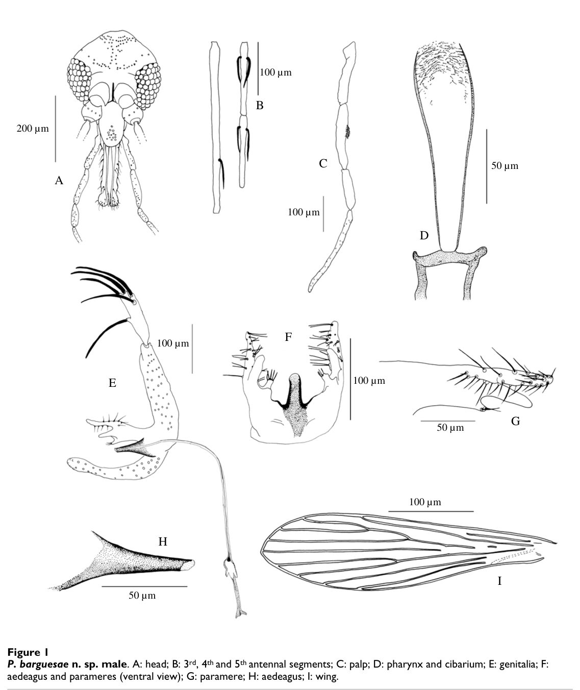

Species › Phlebotomus › Euphlebotomus
Phlebotomus barguesae
| Classification | Genus Phlebotomus, subgenus Euphlebotomus |
|---|---|
| Status | valid |
| Distribution | Records in the project regions: Laos, Thailand (Galati et al. 2025) | Thailand (limestone cave, Ratchaburi Province) (Depaquit et al. 2009) | Laos, first record (Vongphayloth et al. 2024) | Laos: Luangnamtha, Luangphabang, Vientiane province, Xiengkhouang (Vongphayloth et al. 2026, Table 2) |
| Thailand | Thai caves, incl. Pha Tong (Renaux Torres et al. 2023) | Thailand (Galati et al. 2025) | Type locality: cave 'Khao Tham Khun Chom', sub-district Huay Phai, district Muang, Ratchaburi Province, 35 m a.s.l. (coordinates printed as 13°48'85,6"N, 99°70'35,7"E); caught July 2004 and February 2005 with CDC light traps, sympatric with P. mascomai; holotype female in MNHN Paris (Depaquit et al. 2009). | Uthaithani, Phayao, Sakon Nakhon (Polseela et al. 2024); Kanchanaburi (Phra, Taklor, Ma Glue and Manow Phee caves), Saraburi (Tiger Cave, university campus), Chachoengsao; most abundant (38% of COI sequences) (Soomro et al. 2025); Tham Pha Thai, Lampang (Sunantaraporn et al. 2024); listed in the 42-species Thai checklist (Soe et al. 2026, Table 3) |
| Diagnostic notes | Cavernicolous Euphlebotomus described from Thailand. ♀ pharyngeal armature pigmented; ♂ parameral sheath apex blunt-ended (Ding et al. 2025). | Original description (Depaquit et al. 2009): ♀ spermathecae smooth with head not individualised (unique in Euphlebotomus); ♂ aedeagus short, thick, brown with a blunt-ended tip (not previously seen in the subgenus). ♀ (n = 8): pharynx 170-240 µm with typical Euphlebotomus armature (long dark medio-anterior teeth pointing forward, short latero-posterior teeth in a semicircle); cibarium with denticles, no pigment patch; ascoid formula 2/III-XIV, 1/XV; AIII 350-390 µm, AIII/AIV+AV 1.20-1.30; labrum 250-315 µm, AIII/labrum 1.30-1.40; 3-6 mesanepisternal setae; wing 1950-2350 µm; individual duct + spermatheca 178-240 µm, common duct 100-130 µm. ♂ (8 measured): cibarium without teeth; pharynx 143-157 µm with small posterior teeth; ascoid formula 1/III, 2/IV-VIII (further segments missing); AIII 340-400 µm, AIII/AIV+AV 1.17-1.22, AIII/labrum 1.9-2.05; 2-3 mesanepisternal setae; coxite 160-210 µm without tuft of internal setae (P. mascomai: cluster of 12-15, Muller et al. 2007); style 105-140 µm with five spines (two terminal, one subterminal, one intermediate, one inner proximal), coxite/style 1.45-1.75; paramere trifurcated (superior clasper 49-69 µm with many setae, middle 34-37 µm, inferior 10-13 µm with 4-5 setae; the abstract says 'bifurcated'); no spine along the aedeagus; genital filaments 290-380 µm, pump 105-115 µm, ratio 2.7-3.1 (P. mascomai 4.3-4.6). COI differs from sympatric P. mascomai at 86 of 689 sites (GenBank FJ348734-FJ348740). |
| Sources | Renaux Torres et al. 2023, Ding et al. 2025, Galati et al. 2025, Depaquit et al. 2009, Polseela et al. 2024, Soomro et al. 2025, Sunantaraporn et al. 2024, Soe et al. 2026, Vongphayloth et al. 2024, Vongphayloth et al. 2026 |
⚠ Conflicting characters
| Character | Source A | Source B | Type | Comment |
|---|---|---|---|---|
| Subgenus Euphlebotomus: female spermatheca | Lewis 1978: Euphlebotomus defined by 'Spermatheca with differentiated end-segment' (Lewis 1978 30a; Lewis 1982 subgenera 8a) | Depaquit et al. 2009: P. barguesae placed in Euphlebotomus although its spermathecae are smooth with the head not individualised | different interpretation | Depaquit et al. (2009) keep it in Euphlebotomus on male genitalia and female pharynx and call for a revision of the Euphlebotomus-Anaphlebotomus group. Females will not key to Euphlebotomus in Lewis 1978/1982. |
| Paramere lobes | Depaquit et al. 2009: Abstract: 'bifurcated paramere' | Depaquit et al. 2009: Description and conclusion: paramere trifurcated (superior, middle and inferior parts measured) | printing error | Internal inconsistency in the paper; the description is taken as authoritative; nothing changed. |
| Genus | Soe et al. 2026: Abstract: 'Sergentomyia barguesae' | Soe et al. 2026: Table 3 and text: Phlebotomus barguesae | printing error | Internal error in Soe et al. 2026; staged data use Phlebotomus barguesae. |
How it keys out
The chain of characters leading to this taxon in each key (a ready-made diagnosis).
Laos karst (Vientiane): females (Vongphayloth et al. 2024) – couplet 7a
Laos karst (Vientiane): males (Vongphayloth et al. 2024) – couplet 7b
Figures

